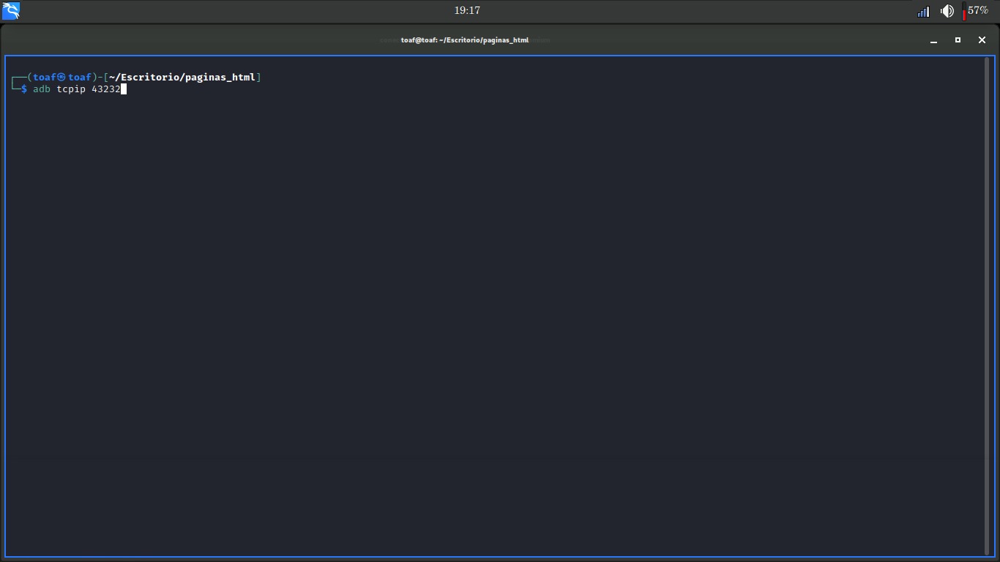

A continuacion se te enseñara como conectar tu movil android a tu computadora ya sea de escritorio o lapto con sistema operativo linux, via adb remoto.
conectar android a Linux via ADB REMOTO
Cabe mencionar que para logra una coneccion exitosa no importa la distrubucion de linux que estes utilizando siempre y cuando sea linux el proceso se llevara a cabo con exito.
- Tener una distribucion de Linux instalada en tu maquuina.
- Que tu maquina linux este conectada a una red wifi.
- Que el dispostivo android que vallas a utilizar este conectado a una red wifi.
IMPORTANTE......
Para poder conectar tu android a tu ordenador se deben tener algunas consideraciones.
- Que el dspostivo android a conectar tiene que estar conectado a la misma red que este conectadsel ordenador en el que realizaras dicho proceso.
Pasos a Seguir
Abre una terminal en tu computadora.
-Ejecuta el siguiente comando para instalar adb sudo apt-get install adb.- Una ves instalado el programa adb en nuestro ordenador, abre una terminal y ejecuta el siguiente
comando adb tcpip : 43232.

Cabe mencionar que los numeros despues de tcpip son el puerto al cual se conectar nuestro dispositivo
por eso una ves despues de establecidos es recomentable que los anotes en algun lugar por que pronto seran
utilizandos.
Tambien no es sumamente necesaio que establescas como puerto el numero 42232 tu elijes el puerto que quieras
utlizar en mi caso utlizare ese, pero como ya mencione, puedes usar el que tu gustes o prefieras.